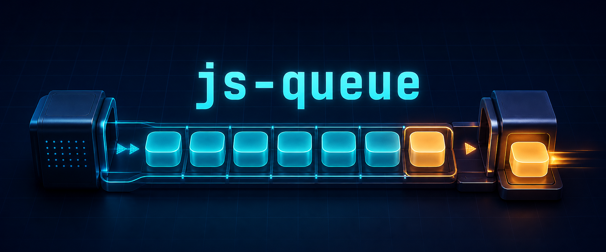

FIFO · explicit hand-off · zero build
Order work.
Release it precisely.
js-queue runs one function at a time and waits for that function to release the next. It stays small because your task—not the library—knows when the work is actually complete.
- native ESM
- CommonJS compatible
- classic browser build

Small by design
One explicit contract.
Add functions in order. The queue starts when idle. Each function receives the queue as this and calls this.next() when it is ready to release the following item.
1tiny runtime dependency, for the legacy stack entry
3loading styles: ESM, CommonJS, classic script
100%native V8 coverage gates on the queue core
9focused documentation pages
task 1
task 2
task 3
active
Tasks can release synchronously or later.
Call this.next() inline, in a callback, after a timer, or from finally. Until then, the remaining queue stays ordered and still.
Choose one answer
Short pages, direct routes.
Each guide owns one question so you can find the relevant contract without scrolling through a single oversized manual.
01 · StartInstall and run the first queueThe five-minute path.
02 · ReferenceRead the complete APIMethods, state, returns, and errors.
03 · PatternsCoordinate real asynchronous workGates, pauses, errors, and cleanup.
04 · BrowserUse modules or a global scriptNo bundle is required.
05 · ExamplesWatch a queue executeInteractive FIFO demo and recipes.
06 · StackChoose FIFO or LIFOThe modern easy-stack 2 entry.
07 · UpgradeMove from version 2 to 3Module paths and behavior changes.
08 · EvidenceInspect testing and coveragevanilla-test in Node and Chrome.
09 · PackageOpen js-queue on npmVersions, downloads, and install metadata.